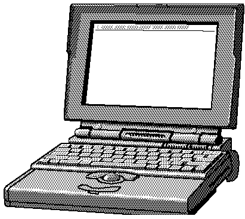

Second Quarter, 1993
President's Column
By Michael Quan, President ASACMUG
Welcome to another ASACMUG newsletter which is a dead giveaway that we're going to have another meeting. It's been a long time since our last general meeting but the user's group has not been totally inactive. Core group meetings have been held almost every week during the lunch period. Current plans are to extend the lunch meetings to include more members in the months to come. If anyone is interested in participating in the core group meetings, you're very welcome.
During the January, 1993 MacWorld show in San Francisco, at least seven MUG members attended representing both the user's group and ASE unofficially. Attending the event were Tracy Johnson, Roger Wright, Alex Morando, Ron Keating, Dick Lerner, yours truly, plus one other member who attended incognito. If you've never attended a MacWorld,plan to attend this coming January, the 10th anniversary of the Mac, where Apple is expected to introduce the new PowerPC. Check with anyone who has attended and they'll tell you that its awesome.
Our next meeting is scheduled for Thursday, May 27 at 4:30 PM. The meeting will feature a video on how GAPD utilized the Macintosh and Quicktime in their manufacturing area. This will be followed by a visit from CompUSA and Apple Computer who will present their lastest desktop Macintoshes, the Centris 650, Centris 610, and the Mac LC III. CompUSA will also present a special employee purhase plan for Apple products available to all AlliedSignal Employees during the month of June at their Torrance store. Prices are well below street prices and are an excellent opportunity to purchase a new or updated system. For a preview of the prices, check out the pricelist on the back of our meeting notice.
Prior to the user's group meeting (4 PM), there will be a short training session covering the engineering Appletalk/Ethertalk network plus use of the just installed Macintosh software /email server. The server will allow sharing of a wide variety of software plus give user access to ASAC sales offices worldwide. Anyone wishing to attend is welcome at ether the training session or user's group meeting which will immediately follow.
The emphasis of this month's newsletter is electronic communication which will be one of the most exciting and expanding areas in personal and business computing. If you don't have a modem for your personal Mac, you're missing out. With 2400 baud data/fax modems going for around $100, there is little not to get involved. We'll be having more on this is future activities.
Bye for now, see you at the meeting!
Contents
- Essential Utility: Disk Dup+ Page 2
- Beginners Q&A Page 2
- FirstClass(TM) Bulletin Boards Page 4
- Reach Out and Communicate with Someone Page 5
- Sponsor Page 8
Interested in joining ASACMUG? Membership forms are available from Tracy Johnson at x3927.
Essential Utility: Disk Dup+
By Ron Keating, ASACMUG
What is the first thing we all do whenever we acquire any new software? We duplicate the original floppy disks! Duplicating disks is one of the most common chores for a Mac user. For several years, I did this the hard way. First I formatted the a disk and then I would drag the entire contents of the original disk to the newly formatted disk using the finder. This involved a lot of disk manipulation and caused me to buy a second, external floppy disk drive from Applied Engineering to speed up the process. Even after all of this work and expense, the copied disks did not always work properly, because they weren't exact replicas of the original. Because of this, I was sometimes forced to install programs from the original diskettes.
Then, last year at the Los Angeles Macintosh Group's MacFair LA '92, I discovered one of those indispensable little programs that does one thing, but does it very well. I like this type of software; it's DiskDup+, a $20 shareware program written by Roger D. Bates. Because it is shareware, it can be copied and passed on to anyone to use, under the understanding that they are to evaluate the program and determine whether to discard it or pay for its continued use. I picked it up on a shareware disk put out by LAMG for $5.00.
The thing I use DiskDup+ for is to duplicate floppy diskettes with sector duplication from 800K or 1440K masters on to 1440K copies. I have standardized on the 1.4MB diskette size, but most software still comes on the 800K size. The new diskette is an exact, sector by sector, copy of the original! DiskDup+ formats the new disk (if required), warns you if there is anything on the new disk that will be written over, and performs a complete read back of the copy to verify all data against the original in order to insure full data integrity. Any number of copies can be made and a new master may be read in at any time without exiting the program. The time consuming Anti Virus scan is avoided because the Master disk is never mounted and therefore viruses can never propagate onto the master (and its copies) during the duplication process. It is even faster than using two floppy disk drives and the Finder copy.
Operation is a no brainer: launch DiskDup+; it asks you for the Master. Insert the Master, it reads it, ejects the disk, and asks for the Copy. Insert the Copy and it formats, copies, verifies, and ejects the disk and asks for a new Master. All of this happens very quickly!
Some Common Beginner's Questions--Answered
By Tom Pitts, MUG News Service
Q -- I started with a Mac Plus just last year and I want to upgrade. I am planning to buy an SE/30 with 8 MB RAM and a 100 MB internal hard disk. I'll be using standard programs for spreadsheets, word processing and graphics -- nothing really fancy or exotic. I am uncertain whether I should use System 7 instead of system 6.0.5 which I have been using. What do you advise?
A -- There is no doubt about it, System 7 is the current and future system software for the Mac. It is much more powerful and, with the System 7 Tuner extension (available from user groups and electronic information services such as America Online), System 7 performs well, albeit somewhat more slowly than system 6.0x. Since you will have a Super Drive, i.e., a floppy drive that accepts 1.44 MB floppy disks, get version 7.0.1 -- it is available only on the high density floppies. If you want better speed, use SpeedyFinder7 cdev, System 7 Pack!, and/or FinderEdit to turbo-charge and customize your system. These great shareware programs are available from user groups as well as electronic bulletin boards, just like System 7 Tuner. You can use ResEdit to improve your system software, but I don't recommend that route for a beginner. By the way, I don't care what you've heard or read elsewhere, you need at least 4 MB of RAM to use System 7 effectively. What you plan to buy will be fine with System 7.
[A disk fragmentation question has been removed for brevity - Ed.]
Q -- I'm lost. I have a bunch of fonts, some are TrueType some are Type 1 taken from AOL and the Disks of the Month. How are these fonts different, how do I use them and which is best?
A -- The Mac needs two types of information about fonts. It must know how to display the font on the screen and how to print it. TrueType fonts contain both types of information in a single suitcase file. They look nice on the screen and the printed page no matter what type size you use. Because they are in a single file they are easy to use -- just install them into the System file. Under system 6.0.x use Font/DA mover to install a TrueType font. With System 7, open the suitcase file by double-clicking it, and drag the font file that is inside the suitcase into the System Folder. It will be placed in the System file for you.
Type 1 fonts have two parts -- the screen information and the printer information, often referred to as the screen font and the printer font, respectively. The printer font contains all the information, written in a format called PostScript, that your printer needs to print that font at any size. It is a "system extension" and is stored in the Extensions Folder within the System Folder. (With system 6.0.x, it is placed in the System Folder itself.) Laser printers have some built-in printer fonts so you don't need to have those printer fonts in the System Folder too. Read your printer manual to determine which fonts are built in.
The screen font is in a suitcase file. Each screen font file contains the information for only one type size. You should install a separate screen font for every type size of a particular font that you will use. If you select a type size for which you do not have a screen font installed, the Mac will use the printer font data to approximate that font on your monitor. It will look pretty bad on screen. (It will print fine because the printer uses the printer font not the screen font.)
When you get a Type 1 font that is not built in the printer, put the printer font into the System Folder. Install the accompanying screen fonts it in the System file just as you would do for a TrueType font.
Some printers, like the ImageWriter, don't read PostScript files, so they cannot use Type 1 fonts. Don't despair. If you want to use them on a non-PostScript printer, get Adobe Type Manager. It translates the PostScript printer fonts for your non-PostScript printer. The output isn't as clean as that from a laser PostScript printer, but it beats the ImageWriter alone. ATM also smoothes out fonts on the screen so you don't need to install every size screen font available. So even if you have a laser PostScript printer, if you use a lot of Type 1 fonts ATM will improve your screen images and save disk space.
Q -- What should I do when my mouse freezes? Some people tell me to unplug the mouse from the Mac then plug it back in. I've heard that isn't safe. What's right.
A -- You heard right. Never unplug any peripheral from the Mac while its power is on. Sure, I understand. The Mac froze and if you restart it, you'll lose your unsaved work. But unplugging the mouse or keyboard is not the answer.
If you're using System 7 there is a possible solution. Say the mouse freezes while you are in one application and you have unsaved work open in another application. You can't rescue any unsaved work in the frozen application. Sorry. You might be able to save the work in the background application. Depress the Command, Option and esc keys simultaneously. If you are lucky you'll get a dialog box asking if you really want to "Force Quit" the application. Click on the "Force Quit" button. Once the frozen application has quit, go to the other, open application(s), save your work and quit all applications. Restart your Mac before you attempt any more work.
If you cannot force quit the application, depress the restart button or turn the Mac off then back on. You'll lose all of your unsaved work this way but it's safe.
Learn a lesson from this experience. Save frequently! Command-S is the motto! I suggest you always save your work before switching applications under MultiFinder (system 6) and in System 7. The files you save will be your own.
A friend, a Mac consultant, tells me that, by unplugging a mouse with his Mac running he blew a fuse on his Mac's motherboard one time. It was easily replaced, but some repair people, taking advantage of a less experienced Mac user, might have swapped the entire board. That's big bucks! He also had two clients blow controller boards on hard drives by unplugging. It's a bad idea!
Q -- I get the Disk of the Month each month from my user group and I download interesting things from America Online. Often when I double-click on something from one of these disks or something I downloaded, I get a box telling me that the application is busy or missing. Why do they put out stuff that I can't use?
A -- Not all files work or open when you double-click on them. For example, Control Panels, INITs, printer fonts, etc., won't open. They are system documents that work through the system software. I suggest you read the documentation that accompanies before you try to use it.
Also you must remember that many items are compressed to save disk space before they are distributed on disks of the month (from your user group) or on electronic information services. Often these files end with the suffix `.sit' or. `cpt.' or a similar string. You must decompress these files before they can be used, utilizing a program like StuffIt Expander, StuffIt, Compact Pro, Extractor, etc. These decompression/compression programs are available from user groups and electronic information services and come with excellent instructions on their use. Once you've successfully expanded a file you then have to attempt to use it.
Let's examine the situation in which you have a document that can be opened, i.e., say a word processor file or a graphics file, not a control panel, INIT, or printer font, etc. When you double-click on such a document, the Mac checks it to see what program originally created it. Then it looks to see if you have that program. If you do have it -- no problem -- the document is opened in that program. If your Mac can't find the program it will give you the hated "application is busy or missing" dialog. If you get this dialog you have some alternatives. Many programs will open documents created by other programs, but you have to use a different technique. If you believe the document contains text, start-up your word processor and select "Open..." from the File menu. The Open File dialog box will appear allowing you to select a file. (If you do not know how to operate this dialog, complete instructions are in the manual that came with the computer.) If you see the document listed inside the standard Open File dialog box, select it, click "Open" and it will be opened. If the document is a graphic, try the same technique with your graphics program.
It is a good idea to have one copy of Apple's TeachText on your hard drive since many instructions are created in that ubiquitous program. The bottom line, and one most Mac users hate to accept, is that you really should read instruction documents (the "Read me" files) that typically accompany any software you want to use.
(c) 1992 MacValley Voice Burbank CA
MUG NEWS SERVICE, 1993
FirstClass(TM) Bulletin
Boards
Alex Morando, ASACMUG
You may or may not be familiar with using your computer and modem to communicate with bulletin board services (BBS). Until recently, you had to be a computer jockey to navigate and understand the workings of a typical BBS; most of them use a command-line interface with menu shells similar to DOS. This steep learning curve for using a BBS explains the recent success of online services such as America Online, which offers a Mac-like interface to their Mac and PC customers.
In 1992, SoftArc Inc. of Canada introduced FirstClass(TM) (FC), which turns any Mac into a fully functional BBS with a graphical user interface. FC allows as many people to logon up to the number of modems connected to the BBS computer. The software running the BBS is known as the server while the software you use to call the BBS is called the client. The FC client application (Mac or Windows) is free and is available from ASACMUG or from a local BBS. For first-time callers, FC provides a command-line interface to allow you to download the client. Each BBS has a settings file used by the client to display icons and sounds customized for that BBS. For optimum performance, it is best to call a FC board with a 2400 baud or higher modem.
When a user calls up a FC BBS, he or she will not see a single command line, but rather a "Desktop" on that BBS. Message areas ("Conferences") are folders which are opened by simply double-clicking on the icon. Each Conference will have a list of messages and additional sub-conferences. To the user, the FC BBS looks just like another hard disk on the Mac, except that this disk is connected to your Mac via phone lines. Messages can be read in any order - by date, time, person, or subject. Thus, you can follow a single subject without diverting your attention to other discussions. Messages can be either sent to an individual person or to a conference (public). Files are treated as message enclosures in the same way you would enclose a floppy disk with a letter to a friend. A nice feature of FC is that it allows for multiple and simultaneous uploads and downloads; while you are downloading multiple files, you can also be uploading another file and reading messages, all at the same time.
Other features supported by FC include text formatting (fonts, styles), color, sounds, aliases, mailboxes, resumes, talking to others in real-time, directory services, communicating with other FC BBS, and many other features that make using it a pleasure. Traditionally, setting up and maintaining a BBS is often a "labor of love" with long hours and large financial investments; FC is no different, but it makes running a BBS as much fun as using it.
The ability of FC to connect to other FC boards has led to a growing network of Mac bulletin boards around the world. Known as OneNet, it is a network of approximately 100 (and growing) FC boards sharing conferences, files, and information. For the price of a local call, you can access conferences with participants from around the country. More information can be found in the OneNet Primer, available from ASACMUG.
The following is a short list of FC boards in Southern California. Give them a try.
| MacValley OnLine | Burbank | 818-840-XXXX |
| MacIsland | Los Angeles | 310-476-XXXX |
| Servant Christian | Redondo Beach | 310-371-XXXX |
| SGVMUG | La Cañada | 818-790-XXXX |
| LAMG BBS | Los Angeles | 310-225-XXXX |
| The Drawing Board | Hacienda Heights | 818-965-XXXX |
| Guerilla Symbiotics | La Verne | 909-593-XXXX |
| Gentle Rain Forum | Claremont | 909-593-XXXX |
| South Bay BBS | Hermosa Beach | 310-TBD |
[most of these boards have since gone offline and the phone numbers have been removed in the HTML version- Ed.]
Are Our Floppies Safe for Your Data?
The use of IBM pre-formated floppies in Macintoshes is believed to be responsible for many instances of corrupted data in ASE Engineering. The symptoms are that the disk seems to reformat properly and work satisfactorily but will suddenly become unusable. In most cases, the data has been recovered using Norton but in a least one instance, the data was lost.
It is believed that the problem is that the Macintosh SuperDrive is not able to completely eliminate the heavy pre-formatting and that the traces that remain corrupts data written on top of them. The best advice is to avoid pre-formatted IBM floppies wherever possible. Where this is not possible, try reformatting the disk at least three or four times before using. Multiple reformatting is not a necessarily a cure but it cannot hurt. In ASE Engineering, either unformatted or Mac formatted floppies are being ordered in addition to the IBM formatted disks. Be sure to ask for the right preformatted disks for your machine.
Reach Out and Communicate with Someone
(finding that on-ramp to the Internet)
By Don Rittner, MUG News Service
Have you wanted to reach someone on the Internet, but can't seem to find a connection? More than a million and half hosts are connected to the Internet-- the global network of networks -- spanning more than 40 countries, and reaching some 40 million people.
Millions of scientists, professionals, educators, students, business folks, government employees, and lay people use the Internet everyday to send email, download files, remotely logon to supercomputers and databases, join discussion lists, and work in online communities separated geographical by miles and miles and with no time constraints. It can be said if you can't find an answer to a question on the Internet, there is no answer!
The Internet is a constantly moving freeway with virtually no stoplights and is quickly becoming the world's communications highway, but many of us can't seem to find an on-ramp.
It's easier than you think.
Over the past few years, parts of the Internet have been opening up to allow general computer user access. Today, if you have an account on any of the major commercial online services like America Online, CompuServe, and GEnie, you already have access to the Internet using their email capabilities.
I'm going to show you how to become part of the Internet community this way.
Most activities on the Internet come down to human communications-- personal to personal email-- and so America Online, CompuServe, and GEnie have developed special email gateways to the Internet (Prodigy has yet to follow suit). While you still cannot use the FTP (file transfer protocol - downloading files), and Telnet (remotely logging on to a computer as though you were at its location) facilities, you can reach the brain power of the Internet - millions of people.
We will look at three commercial services, America Online, CompuServe, and GEnie, and a new email service called WorldLink.
America Online (AOL)
America Online is the new kid on the block of information services, opening its online doors in 1988. AOL is for users of Apple, Macintosh, and PC compatible computer users and sports a great graphical interface for all platforms. Users of all experience levels, from novice to pro, can navigate easily using windows, pull -down menus, and the "point and click" method using a mouse.
AOL has hundreds of forums, downloadable files, special interest groups, news, and more to keep the average onliner happy. It currently has about 200,000 members.
Sending Mail to the Internet
On AOL, sending mail to a user on the Internet is as easy as sending mail to anyone on AOL. There really is no difference and there is no extra charge. The user selects a blank page from the mail menu and inserts the user's Internet ID into the destination (TO:) box.
For example, if I wanted to send some mail to myself at my university address, SUNY at Albany, New York, I would address the mail like this:
drittner@uacsc1.albany.edu
"drittner" is the user id at my Albany mailbox, the @ (at) symbol separates the user id from the actual destination which in this case is the SUNY mainframe -- id is "uacsc1.albany.edu."
That's all there is to sending email to the Internet on AOL. All of the magic of sending to the Internet is done invisibly by AOL.
Now there are some restrictions. Outgoing mail cannot be larger than 32k (about 4500 words or 4 pages). On the Mac, Apple II, and PC-Link versions, you cannot receive mail larger than 27k, the rest will be truncated. On the PC version of America Online, and Promenade, incoming mail cannot be longer than 8K. Any text beyond 8K will be truncated. So, this means you cannot subscribe to Internet discussion lists or attach files.
If for any reason your mail does not make it to the destination box, it's returned along with your actual text.
Receiving mail on AOL
To receive mail from the Internet or other commercial services, to your mailbox on AOL, the sender must know your AOL id and attach it to AOL's id which is "aol.com "-- pretty easy. So if you wanted to send me mail you would address it to:
drittner@aol.com
drittner is my AOL id, and aol.com is AOL's id.
CompuServe (CIS)
CompuServe Information Service (CIS), is the mother of all online services with 1,400 databases, some 170 forums, and more than 500,000 subscribers.
It's easy to navigate through CIS's forums and services. CIS is menu driven but there are shortcuts to save time. To go to any of the services, CIS uses keywords combined with "Go." So to get to the mail area, for example, you type "Go Mail."
Sending Messages To the Internet
To send a message to an Internet address, you write or upload an ASCII text file of no more than 50,000 characters or 1000 lines using the CompuServe Mail editor. Each 2,500 characters is about one double-spaced page.
Unlike AOL, you must use a special addressing format to send to the Internet. When you are ready to address your mail to the recipient you need to add
>INTERNET: before the recipients ID.
To send me mail from CIS to my university ID it would look like this:
>INTERNET:drittner@uacsc1.albany.edu
If your message is undeliverable, it usually will be returned to you along with the text of your message. Whether the message text is actually returned to you depends on the remote mail system, but you will always receive notification if your message cannot be delivered.
Receiving Messages From Internet to CIS
Only ASCII (text only) messages up to 50,000 characters can be sent through the gateway.
When an Internet member wants to send a message to you they should know:
-Your User ID number with the comma changed to a period.
-The CompuServe domain address which is "compuserve.com"
To send me mail on CIS, (my id is 70057,1325), it would look like this:
70057.1325@compuserve.com
Notice the comma has been changed to a period in my id.
Receiving messages from Internet is charged the same as sending Mail for members on the CIS' Standard pricing plan, and the cost applies toward your monthly Mail usage allowance. There is no additional cost (other than connect time charges) to receive/read messages from Internet for members on the alternative pricing plan. So the most you will pay for reading Internet messages under the standard pricing plan ($7.95/month for basic services and an hourly rate for extended services) is .15 cents for the first 7,500 characters, and .05 cents for each additional 2,500 characters.
GEnie
GEnie (General Electric Network for Information Exchange), is a commercial online service owned and operated by General Electric since 1985. GEnie has over 190,000 subscribers and offers mail, special interest groups, online shopping and travel, games, live conferences, computer user group "roundtables," clubs and software.
GEnie is also menu driven and you can use keywords to save time. You simply type the keyword at the prompt, i.e. "Mail" to get to the mail prompt, or you can use the page number with the word move, i.e. "Move 200."
Sending Mail to the Internet
GEnie is similar to CIS in that you add an extension onto the user ID of the person you are sending mail to. So, if I were to send mail to my university account, it would look like this:
drittner@uacsc1.albany.edu@INET#
The @INET# tells GEnie that the mail is destined for the Internet.
Receiving Mail from the Internet
Likewise, if you want someone to send you mail from the Internet to your GEnie mailbox, they need to know GEnie's Internet ID which is "genie.geis.com." So to send me mail you would address it as:
MNS@genie.geis.com
"MNS" is my user id on GEnie and "genie.geis.com" is GEnie's Internet ID.
You can avoid using the extension of @INET# by going into a special Internet mail area by typing "Internet" at the prompt.
Once you enter the Internet area, you can send Internet mail by choosing item 4 on the Internet main menu. This brings you into a special text editor.
All you need to do in this text editor is write the user's Internet ID without any extensions, i.e. drittner@uacsc1.albany.edu. This special Internet mail area takes care of directing the mail to the Internet.
Sending and receiving Internet Mail on GEnie has a surcharge. There is a $2.00 registration fee - this is a one time charge for all new users signing up for the service. However, if a user cancels and signs up again, another $2.00 is charged.
Additionally, there is a charge of $.30 for each 5000 bytes or portion thereof for incoming or outgoing messages.
Canadian Rates are $3.00 registration fee and $.40 for each 5000 bytes or portion thereof for incoming or outgoing messages.
Worldlink
Not everyone is member of AOL, CIS, or GEnie, so what do you do now? There is a new service called WorldLink from InterCon Systems Corporation in Herndon, Virginia that fills the void.
Worldlink is a special service for PC and Macintosh computer users that gives you a front end to the Internet using your own PC. You simply call one of thousands of access lines (in over five countries) to log on. InterCon offers two flavors - Worldlink-Email and WorldLink-Basic.
The email version gives you off-line and batch reading and creation of email. This allows you to compose your text and the software then sends it, picks up any mail waiting, and then logs off, saving money. There is a flat rate of $19.00 per month (2400 bps) with no limited usage charges. For 9600 bps access, it's $29 per month.
he Basic service gives you the email features but also gives you FTP --file transferring capabilities, and Usenet news -- thousands of conferences on a variety of subjects from Art to Zoology. As of this writing, only the PC version has Usenet access. January 93 is the target date for the Mac version.
The Basic service is also done in real time, so you stay connected to the network to send and receive mail, transfer files and view the Usenet news. There is a monthly fee of $29 for 2400 bps access, $39 for 9600 bps. You are allowed 50 megabytes per month and an additional charge of $1 per megabyte if you exceed the fifty. InterCon may have Telnet capabilities in the future.
For those who do not have a local access point, InterCon will shortly have a 800 number for a small fee.
Happy Trails
So there you have it. Internet access to millions of people without really worrying about having a direct connection, and in the case of CIS and GEnie, for very little extra cost. Of course, if you still want to remote logon, subscribe to Internet mailing lists and bulletin boards, you need to get a "real" connection (more about that in future columns). And you still need to know the Internet id of the person you want to correspond with. There is no master Internet telephone book to look up names yet -- but give it time.
Notes
For further information about any of these services, contact them at:
| AOL: | 1-800-827-6364 |
| CIS: | 1-800-848-8199 |
| GEnie: | 1-800-638-9636 |
| Worldlink: | 1-703-709-9890 |
[For more information about the Internet at ASE, please contact Alex Morando (xXXXX) - Ed.]
And Now a Word from one of our Sponsors....
SoftArc Inc.
Global-Area Communications
805 Middlefield Road, Suite 102
Scarborough, Ontario, Canada M1V 2T9
Tel: (416) 299-4723 FAX: (416) 754-1856
SoftArc specializes in network and communications software for Macintosh and PC platforms.
The company was formed by three former engineers and computer scientists who used to work at Bell Northern's Labs. They came from a telecommunications software background, having worked on Digital Switch and high speed communications software. The President of SoftArc was the senior architect for the highly successful Meridian Mailreg. voice mail system.
SoftArc is a member of the Apple Partners Program, a privilege granted to relatively few commercial Apple software developers. This means that not only are we a "commercial developer of Applereg.-compatible products and services", but also a strategic commercial developer. Apple states:
Apple limits membership in this program to developers who directly contribute to Apple's long-term product strategies and business objectives.
SoftArc's membership in the Partner's Program was granted on the strength of its FirstClass product.
Today SoftArc's FirstClass flagship communications product is sold around the world in more than 25 countries as well as in the U.S. and Canada. In total these systems encompass over 100,000 user mailboxes and 20,000 conferences.
FirstClass is used by businesses, educational institutions, government and private individuals. In addition there are a large number of public access online information services that use the FirstClass software.
|
Office |
Name | Extension |
|---|---|---|
| President: | Michael Quan | XXXX |
| Vice President: | Andy Ptashnik | XXXX |
| Secretary: | Tracy Johnson | XXXX |
| Treasurer: | Steve Brost | XXXX |
| Board Member: | Russell Strahan | XXXX |
| Board Member: | Alex Morando | XXXX |
ASACMUG newsletter is an independent publication not affiliated or otherwise associated with or sponsored or sanctioned by Apple Computer Inc. The opinions, statements, positions and views stated herein are those of the authors or publisher and are not intended to be the opinions, positions or views of Apple Computer Inc.
(c) 1993 ASACMUG
Applereg., Macintoshreg., FDHDreg., and Macreg. are registered trademarks of Apple Computer.
Many of the articles used in the newsletter come from outside sources such MNS, Apple Users' Group Connection and information services such as American On-Line and Connect. We would prefer having more member written articles since this is a vehicle for us to exchange information and ideas.
